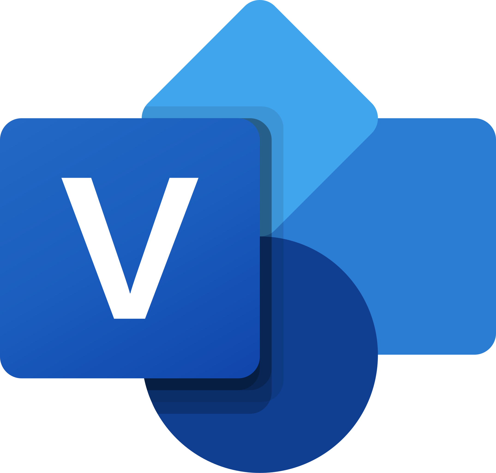
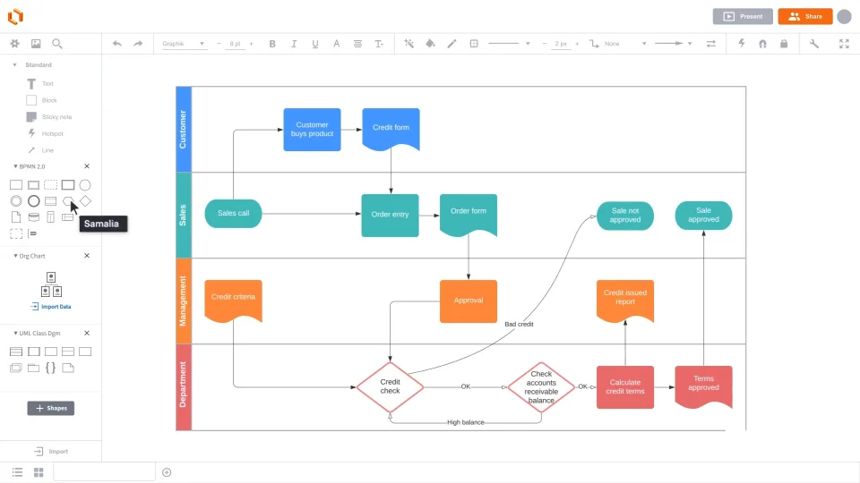

Uppercase
„ülemise taseme" CASE-vahendid (upper CASE tools) toetavad
analüüsi ja projekteerimist. Peamiselt on nad kasutusel kasutajanõuete
analüüsimisel ja dokumenteerimisel. Nad on ennekõike mõeldud visualiseerimiseks,
erinevate skeemide koostamiseks ja ka dokumentatsiooni genereerimiseks. nad
toetavad traditsiooniliste diagrammikeelte kasutamist (olem-seos diagrammid, andmemudelid,
UML-skeemid, jne).
Main
Lowercase
-
Mille jaoks neid kasutatakse?
-
Tarkvaraarenduse esimestes etappides: analüüsis ja projekteerimises
-
Kasutajanõuete analüüsimisel ja dokumenteerimisel.
-
Visualiseerimisel, nt erinevate skeemide koostamisel.
-
Dokumentatsiooni genereerimisel.
-
Tüüpilised tööriistad ja kasutusvaldkonnad:
-
Olem-seos (ER) diagrammid, andmemudelid, UML-skeemid.
-
Süsteemi struktuuri ja protsesside modelleerimine.
-
Prototüüpimise tööriistad (nt kasutajaliidese visandid).
Microsoft Visio
-

-
Diagrammide ja vooskeemide loomine – toetab UML-diagramme, protsessiskeeme, andmevoogusid jne.
-
Andmevisualiseerimine – võimaldab graafiliselt kujutada keerulisi süsteeme.
-

Lucidchart
-

-
Veebipõhine diagrammitööriist – alternatiiv Microsoft Visiolle, ei vaja installimist.
-
Loob UML-diagramme, vooskeeme, organisatsiooniskeeme jne.
-

Allikas:
EUCIP